La brume : ta 9.6 et ta 9.1 refaites dans la vraie app, dis-moi laquelle.
Onglets : tu as pris A. Planète : oui à « tourner puis ouvrir ». Les deux partent dans main après la CI.
Captures et vidéos : la vraie app sur mon simulateur, API locale et compte de démo (pas staging). La roue grise est l'outil du build de dev, absente de l'app publiée.
« Moi je veux 9.6 justement ou 9.1, je m'en souviens plus, faut tu me les redonnes. »Toi, 30/09, après avoir refusé ma première brume grise.
Ce qui clochait : j'avais teinté la brume en gris et je l'avais affaiblie de moitié. Du coup, elle ne ressemblait plus à ta 9.6.
Ici : chaque fois, ta maquette du 29/09, puis la même brume sur le vrai composant, sans rien committer.
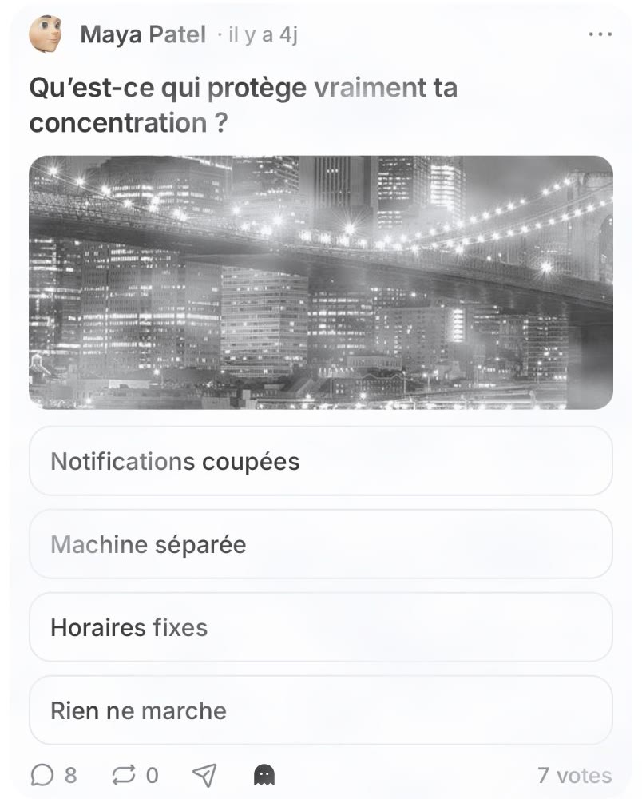
Nappes de brouillard sur tout le take.
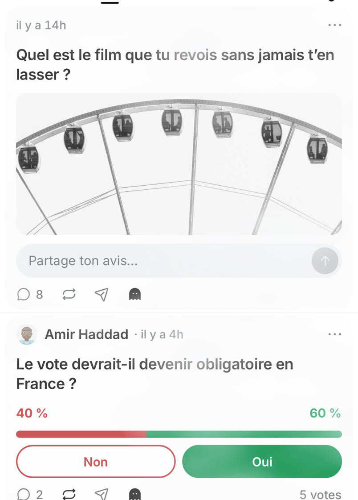
Nappes blanches, texte délavé par endroits, comme ta maquette.
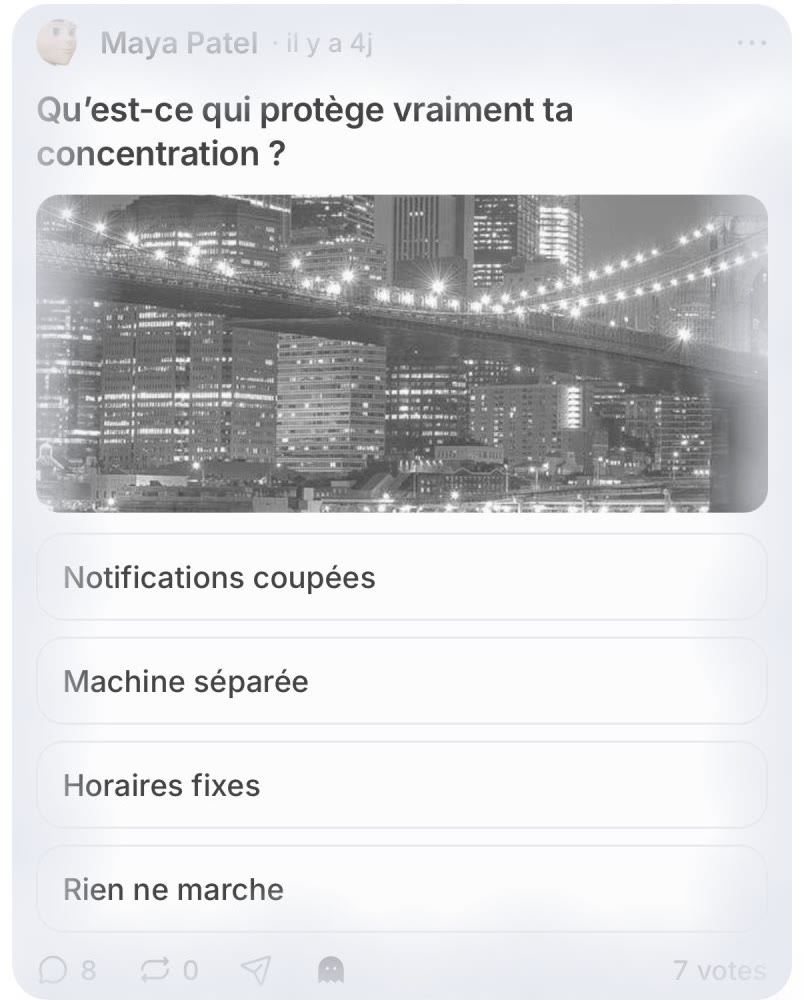
Le nuage monte des bords et couvre le take.
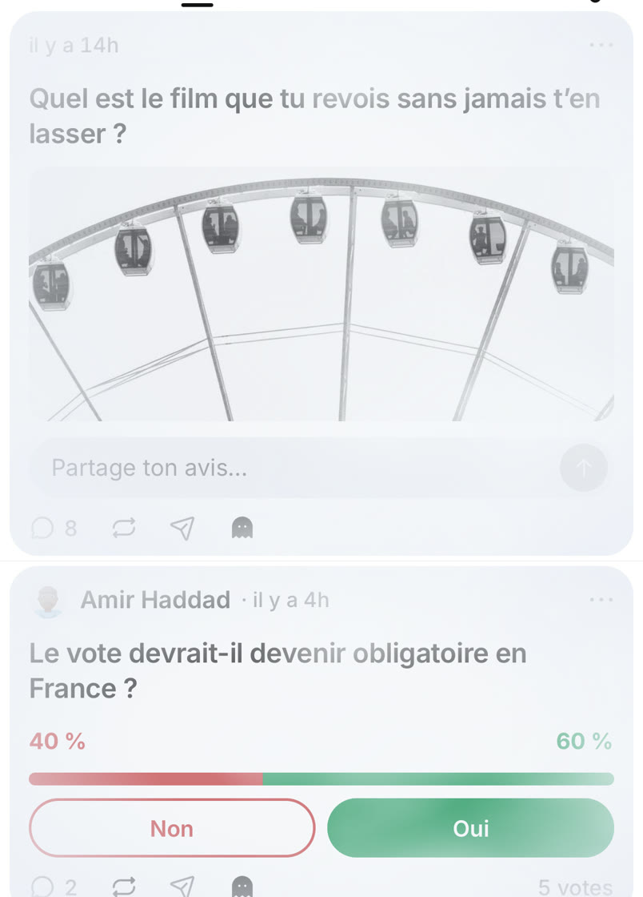
Bords embrumés, carte lilas, texte du milieu bien net.
Toucher le fantôme : la brume se lève, puis revient en 2 s.
Même geste, même animation, sans rebond.
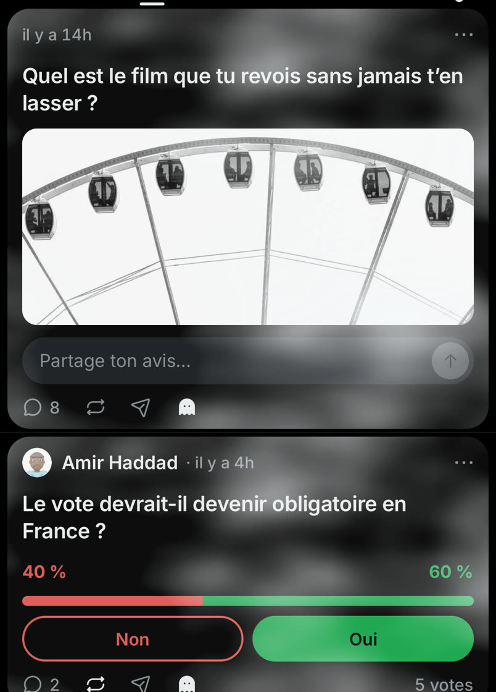
Une fumée grise sur tout le take.
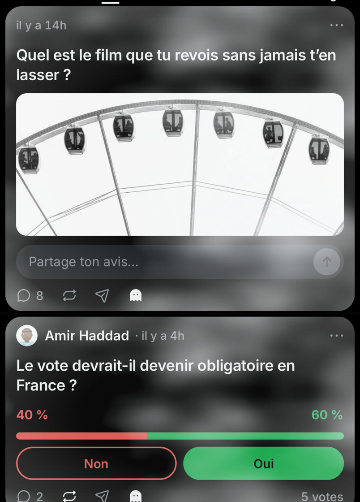
La même, un peu plus claire sur les bords.
Une limite : ta maquette passait la photo en noir et blanc ; l'app ne sait pas le faire proprement, la brume la délave seulement.
Refusée : ma première version grise, plus bas dans l'historique de la PR #2356.
« Takes, Questions et Jeu sont grave mal placés, ça fait super espacé. »Toi, 30/09.
Cause : la rangée est en « space-between », pensée pour cinq onglets. À trois, 110 pt de vide entre chaque mot.
Recommandé : A2, trois tiers d'un bord à l'autre, trait sous tout le tiers, comme Instagram (Jev : 0,70). Déjà codé.
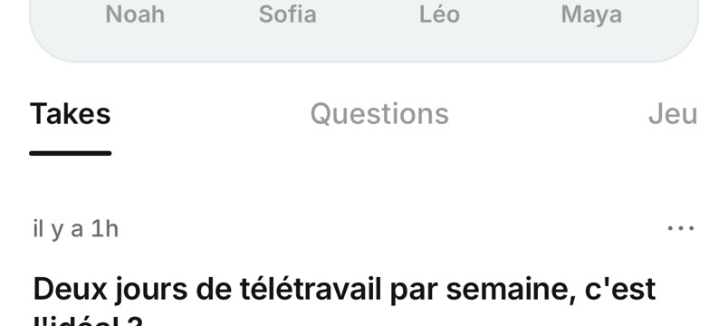
Takes à gauche, Jeu à droite, Questions perdu au milieu.
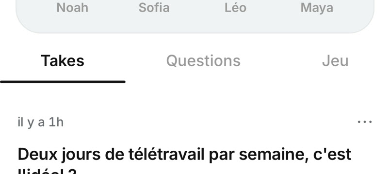
Recommandé. Chaque mot centré dans son tiers, comme Instagram.
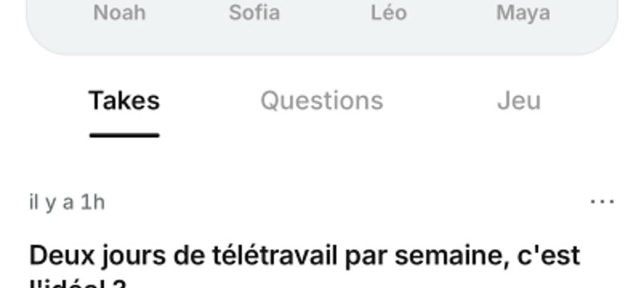
Comme le profil public d'aujourd'hui.
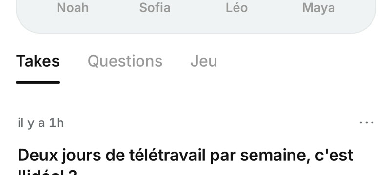
28 pt entre les mots, comme les onglets de X.
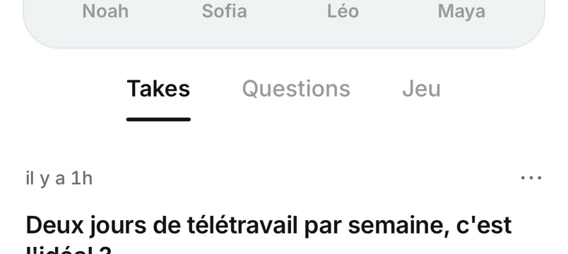
36 pt entre les mots, bloc centré.
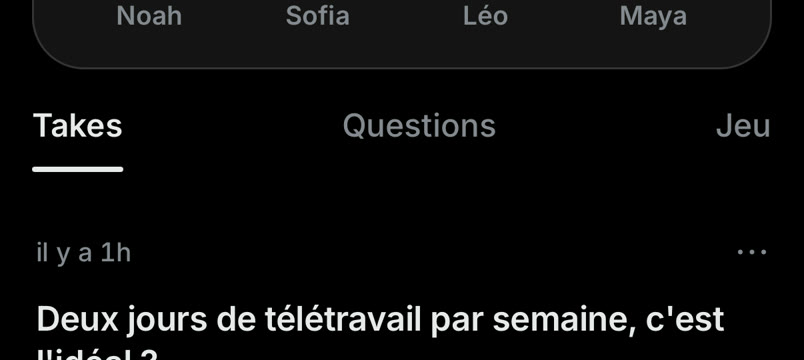
Le même écart en thème sombre.
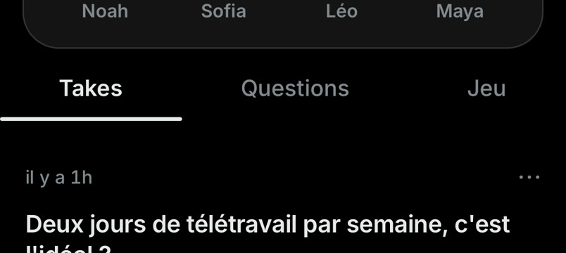
A2 en thème sombre.
Le profil public passe aussi en A2, pour que les deux profils se ressemblent.
« On voit pas l'entre-deux, on voit le jeu blanc et je suis dans Questions. »Toi, 30/09.
Cause : seul le trait suit le doigt. La page d'à côté n'existe pas pendant le geste : la page courante s'efface, puis la suivante apparaît d'un coup.
Solution : un vrai pager, la page voisine chargée et collée à côté, qui suit le doigt, sans rebond. Un agent la code, la vidéo « après » arrive ici.
Takes part de 20 pt et s'efface, à droite c'est vide.
« Quand j'appuie sur la planète, faut qu'il y ait une animation où la planète tourne quand ça s'ouvre. »Toi, 30/09.
Codé : un tour complet sur elle-même, 450 ms, qui ralentit jusqu'à l'arrêt, sans rebond (Jev : 0,78).
Problème vu sur simulateur : l'écran se fige ~0,5 s à l'ouverture, le tour se joue pendant le gel et ne se voit pas.
Solution : la planète tourne d'abord, la carte s'ouvre juste après. Essai à droite, l'agent le code.
La planète reste figée, puis la carte s'ouvre.
Les continents défilent, puis le disque s'ouvre sur la carte.
Nouveau · Gel à l'ouverture de la carte : ~0,5 s sans une image au toucher de la planète, même sur main. Solution : animer d'abord, ouvrir ensuite (point 2). À remesurer sur TestFlight, le build de dev exagère.
Nouveau · Commentaire anonyme encore noir : le champ de réponse passe en noir quand on commente en anonyme. Solution : la même brume que le take, si tu veux la cohérence.
Déjà dans Musk · Onglet Jeu et Score (points 13 et 14) : si tu dis oui, la rangée passe à deux moitiés, A2 marche pareil.
Déjà dans Musk · Bandeau « Ton vote sera anonyme » : il s'affiche encore à chaque toucher du fantôme, par-dessus la brume.
Fausse piste écartée : le fantôme de la page d'un take semblait mort ; c'était la bulle d'outils du build de dev.
Pour choisir : dis 9.6 ou 9.1 pour la brume, et oui ou non pour le glissement quand sa vidéo arrive.